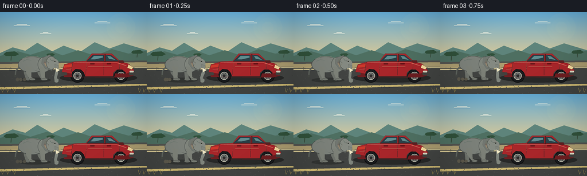
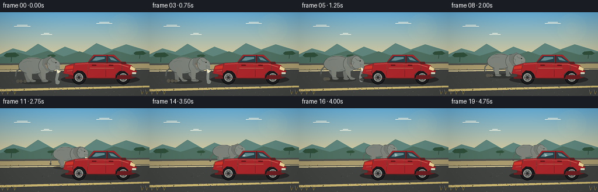

CODING AGENTS AS PIXEL WORLD MODELS
traex/GPT-5.6-Sol · dynamic_spatial_relationship_0063
点击播放 · 原生 RGB 像素
逐轮保存的候选
回放视频、检查图与代码变化。
每份候选均可单独播放。实际图片检查记录在下方工具轨迹中。
候选 01播放与检查图
点击播放 · 原生 RGB 像素


展开代码变化
--- 上一保存版本
+++ 本次保存版本
@@ -0,0 +1,199 @@
+from pathlib import Path
+import math
+import numpy as np
+from PIL import Image, ImageDraw, ImageFilter
+import artifact_io
+
+# A hand-rendered, antialiased safari-road scene. The camera remains fixed while
+# the elephant follows a curved path away from the viewer and behind the car.
+W,H,N,S = 256,144,20,4
+rng = np.random.default_rng(63)
+
+def sc(v): return int(round(v*S))
+def box(b): return tuple(sc(v) for v in b)
+def pts(p): return [(sc(x),sc(y)) for x,y in p]
+
+def ellipse(d,b,fill,outline=None,width=1):
+ d.ellipse(box(b), fill=fill, outline=outline, width=sc(width) if outline else 1)
+def polygon(d,p,fill,outline=None): d.polygon(pts(p),fill=fill,outline=outline)
+def line(d,p,fill,width=1,joint='curve'): d.line(pts(p),fill=fill,width=sc(width),joint=joint)
+def rr(d,b,r,fill,outline=None,width=1): d.rounded_rectangle(box(b),radius=sc(r),fill=fill,outline=outline,width=sc(width))
+
+def background():
+ im=Image.new('RGB',(W*S,H*S)); a=np.asarray(im).copy()
+ # warm, clear late-afternoon sky
+ top=np.array([99,170,211]); bot=np.array([236,205,142])
+ for y in range(sc(91)):
+ t=y/sc(91); col=(top*(1-t)+bot*t).astype(np.uint8)
+ a[y,:,:]=col
+ a[sc(91):,:,:]=[105,111,94]
+ im=Image.fromarray(a); d=ImageDraw.Draw(im)
+ # sun haze and fine clouds
+ glow=Image.new('RGBA',im.size,(0,0,0,0)); gd=ImageDraw.Draw(glow)
+ for r,al in [(25,8),(17,12),(10,20)]: ellipse(gd,(211-r,27-r,211+r,27+r),(255,235,166,al))
+ im=Image.alpha_composite(im.convert('RGBA'),glow); d=ImageDraw.Draw(im)
+ for x,y,l in [(24,24,28),(70,38,19),(165,19,27)]:
+ line(d,[(x,y),(x+l,y)],(238,241,225,80),1)
+ line(d,[(x+5,y-2),(x+l-5,y-2)],(248,247,231,55),1)
+ # distant layered hills
+ polygon(d,[(0,72),(22,62),(44,68),(65,54),(91,69),(111,59),(140,70),(165,53),(191,64),(216,55),(256,67),(256,94),(0,94)],(94,132,123,255))
+ polygon(d,[(0,77),(31,69),(53,75),(82,66),(109,76),(136,67),(166,77),(195,65),(224,73),(256,68),(256,98),(0,98)],(78,111,97,255))
+ # acacias on horizon
+ for x,y,sz in [(19,72,1.0),(239,69,.8),(88,74,.55)]:
+ line(d,[(x,y+13*sz),(x+1,y)],(54,72,56,255),1.2*sz)
+ polygon(d,[(x-13*sz,y+2*sz),(x-8*sz,y-2*sz),(x+7*sz,y-3*sz),(x+14*sz,y+2*sz),(x+8*sz,y+5*sz),(x-9*sz,y+5*sz)],(48,80,58,255))
+ # shoulder, tarmac and foreground
+ polygon(d,[(0,88),(256,85),(256,144),(0,144)],(82,83,78,255))
+ polygon(d,[(0,91),(256,88),(256,96),(0,99)],(170,155,111,255))
+ polygon(d,[(0,99),(256,96),(256,144),(0,144)],(66,68,66,255))
+ # road perspective lines
+ polygon(d,[(0,132),(256,126),(256,129),(0,136)],(205,184,115,190))
+ polygon(d,[(0,100),(256,97),(256,98),(0,102)],(219,204,151,110))
+ # sparse aggregate and foreground dry grass
+ for i in range(210):
+ x=float(rng.uniform(0,256)); y=float(rng.uniform(97,144));
+ shade=int(rng.integers(55,88)); r=float(rng.uniform(.15,.48)*(1+(y-97)/80))
+ ellipse(d,(x-r,y-r,x+r,y+r),(shade,shade+1,shade,90))
+ for x in [4,13,25,243,251]:
+ y=141; line(d,[(x,y),(x-2,y-8)],(153,137,78,180),.7); line(d,[(x,y),(x+3,y-6)],(174,151,79,170),.6)
+ return im.convert('RGB')
+
+BG=background()
+
+def draw_elephant(base, cx, ground, scale, phase, opacity=255):
+ # Render elephant on a local transparent layer to allow consistent scaling/path.
+ lay=Image.new('RGBA',base.size,(0,0,0,0)); d=ImageDraw.Draw(lay)
+ def X(v): return cx+v*scale
+ def Y(v): return ground+v*scale
+ def E(b,fill,outline=None,w=1): ellipse(d,(X(b[0]),Y(b[1]),X(b[2]),Y(b[3])),fill,outline,w*scale)
+ def P(p,fill,outline=None): polygon(d,[(X(x),Y(y)) for x,y in p],fill,outline)
+ def L(p,fill,w=1): line(d,[(X(x),Y(y)) for x,y in p],fill,w*scale)
+ # soft contact shadow (shrinks with distance)
+ E((-31,-4,29,5),(24,25,24,95))
+ # back legs, animated natural opposing gait
+ swing=math.sin(phase)*4.0; swing2=math.sin(phase+math.pi)*4.0
+ leg_back=(111,115,108,255); leg_front=(125,129,120,255)
+ # rear pair
+ P([(-21,-24),(-11,-23),(-12+swing2*.25,-4),(-8+swing2,-1),(-15+swing2,-1),(-20,-12)],leg_back)
+ E((-16+swing2,-3,-7+swing2,1),leg_back)
+ P([(4,-24),(14,-23),(13+swing*.24,-5),(18+swing,-1),(10+swing,-1),(5,-11)],leg_back)
+ E((9+swing,-3,19+swing,1),leg_back)
+ # tail behind body
+ L([(-28,-24),(-35,-17),(-36,-8)],(94,99,93,255),2.3)
+ E((-38,-9,-34,-5),(70,73,68,255))
+ # large barrel body
+ E((-31,-43,20,-13),(124,129,122,255),(77,82,78,255),1)
+ # shoulder volume
+ E((5,-42,28,-14),(127,132,124,255),(79,84,80,255),.8)
+ # near legs
+ P([(-18,-25),(-7,-24),(-7+swing*.22,-5),(-2+swing,-1),(-11+swing,-1),(-16,-12)],leg_front)
+ E((-12+swing,-3,-1+swing,1),(117,121,113,255),(74,77,73,255),.5)
+ P([(8,-25),(18,-23),(18+swing2*.22,-5),(23+swing2,-1),(14+swing2,-1),(10,-12)],leg_front)
+ E((13+swing2,-3,24+swing2,1),(119,123,115,255),(74,77,73,255),.5)
+ # broad near ear, subtly flapping
+ flap=math.sin(phase*.55)*1.3
+ P([(13,-40),(27,-45+flap),(35,-34),(31,-17),(19,-20),(12,-30)],(113,118,112,255),(73,78,74,255))
+ # inner ear warm shadow
+ P([(18,-38),(26,-40+flap),(31,-33),(28,-22),(20,-24),(16,-31)],(132,117,108,155))
+ # head and forehead
+ E((20,-43,39,-19),(132,137,129,255),(78,83,79,255),.8)
+ E((28,-38,43,-21),(132,137,129,255))
+ # trunk: down then curling gently forward; changes with gait
+ sway=math.sin(phase+0.6)*2.2
+ P([(36,-28),(43,-26),(42,-12),(40+sway,-3),(44+sway,0),(42+sway,4),(36+sway,2),(35+sway,-4),(37,-17)],(128,133,125,255),(76,81,77,255))
+ E((36+sway,0,43+sway,5),(128,133,125,255))
+ # tusk
+ P([(37,-22),(45,-18),(39,-14)],(238,229,195,255),(166,158,130,255))
+ # eye and brow
+ L([(31,-35),(37,-34)],(76,80,76,255),.75)
+ E((35,-34.7,37,-32.7),(25,28,26,255))
+ E((35.25,-34.5,35.8,-33.9),(235,225,183,255))
+ # ear/body wrinkles
+ for p in [[(21,-34),(25,-31),(23,-27)],[(27,-39),(30,-35)], [(-22,-34),(-15,-37),(-7,-36)],[(0,-17),(4,-18)]]:
+ L(p,(87,92,87,125),.55)
+ # top rim lighting
+ L([(-24,-38),(-13,-43),(2,-43),(13,-39)],(174,176,158,150),.8)
+ # dust kicked by feet during walking
+ speed=abs(math.sin(phase))
+ if speed>.18:
+ for k in range(3):
+ dx=-20-k*5 + math.sin(phase+k)*2
+ E((dx-3,-3-k*.3,dx+3,2+k*.3),(182,159,111,int(32+28*speed)))
+ base.alpha_composite(lay)
+
+def draw_car(base):
+ lay=Image.new('RGBA',base.size,(0,0,0,0)); d=ImageDraw.Draw(lay)
+ # shadow under car
+ ellipse(d,(104,107,239,124),(20,21,21,145))
+ # wheels behind body
+ for cx in (135,211):
+ ellipse(d,(cx-12,100,cx+12,124),(25,27,29,255),(12,13,14,255),1)
+ ellipse(d,(cx-7,105,cx+7,119),(110,112,109,255),(184,184,168,255),1)
+ ellipse(d,(cx-2.2,109.8,cx+2.2,114.2),(43,45,45,255))
+ for ang in range(0,360,60):
+ a=math.radians(ang); line(d,[(cx+2.5*math.cos(a),112+2.5*math.sin(a)),(cx+6*math.cos(a),112+6*math.sin(a))],(63,66,65,255),.8)
+ # main SUV body, rear at left and nose to right
+ body=[(108,104),(112,92),(130,87),(150,86),(160,73),(195,73),(210,87),(225,91),(234,102),(232,112),(221,114),(219,106),(213,101),(204,101),(198,106),(197,113),(149,113),(146,106),(141,101),(132,100),(126,105),(124,113),(111,111)]
+ polygon(d,body,(168,38,42,255),(79,28,30,255))
+ # darker rocker panel
+ polygon(d,[(109,105),(124,108),(126,114),(199,114),(201,108),(220,108),(231,104),(232,112),(220,115),(112,114)],(109,30,33,255))
+ # roof/cabin windows
+ polygon(d,[(151,86),(162,75),(181,75),(181,86)],(40,62,69,255),(53,34,36,255))
+ polygon(d,[(184,75),(194,76),(207,86),(184,86)],(43,66,73,255),(53,34,36,255))
+ # sky reflections in windows
+ polygon(d,[(158,83),(164,77),(179,77),(179,80),(166,83)],(109,159,173,150))
+ polygon(d,[(187,77),(193,78),(201,84),(190,82)],(112,160,171,145))
+ # pillars and outlines
+ line(d,[(183,74),(183,88)],(91,29,31,255),2)
+ line(d,[(151,87),(209,87)],(79,28,30,255),1)
+ # doors and seams
+ line(d,[(181,88),(181,111)],(103,25,28,190),.75)
+ line(d,[(209,88),(208,101)],(103,25,28,190),.75)
+ line(d,[(151,89),(149,110)],(103,25,28,160),.6)
+ rr(d,(186,90,194,92),1,(99,22,25,255)); rr(d,(157,90,165,92),1,(99,22,25,255))
+ # rear hatch line / red tail lamp makes orientation unambiguous
+ line(d,[(127,88),(124,105)],(91,26,29,200),.8)
+ polygon(d,[(112,93),(126,91),(125,97),(111,98)],(206,55,43,255),(94,29,28,255))
+ polygon(d,[(224,92),(232,97),(230,101),(222,98)],(242,217,156,255),(109,73,43,255))
+ # bumpers, plate, mirror
+ rr(d,(106,106,117,111),2,(66,65,62,255))
+ rr(d,(225,105,236,111),2,(67,66,63,255))
+ rr(d,(226,103,233,106),1,(220,219,196,255))
+ polygon(d,[(207,85),(215,85),(216,89),(208,89)],(95,32,34,255),(61,29,30,255))
+ # glossy body highlights
+ line(d,[(129,89),(151,88),(204,89),(220,94)],(235,98,91,185),1)
+ line(d,[(154,96),(195,96)],(213,72,68,105),.8)
+ line(d,[(115,101),(124,100)],(246,150,111,150),.7)
+ base.alpha_composite(lay)
+
+def ease(t): return t*t*(3-2*t)
+
+frames=[]
+for i in range(N):
+ im=BG.convert('RGBA')
+ # 0.0-0.55s establishes elephant clearly left of the car; then it walks
+ if i <= 2: u=0.0
+ elif i >= 17: u=1.0
+ else: u=ease((i-2)/15.0)
+ # Curved route into depth and behind the parked vehicle.
+ cx=61 + 76*u + 6*math.sin(math.pi*u)
+ ground=119 - 25*u - 2*math.sin(math.pi*u)
+ scale=.96 - .23*u
+ # Walking bob and four complete alternating strides, settling at destination.
+ phase=(i-2)*math.pi*.56
+ bob=(math.sin(phase*2)*.8 if 0<u<1 else 0)
+ draw_elephant(im,cx,ground+bob,scale,phase)
+ # Car is always composited in front: overlap is a strong, explicit depth cue.
+ draw_car(im)
+ # subtle foreground vignette for cinematic focus
+ arr=np.asarray(im.convert('RGB')).astype(np.float32)
+ yy,xx=np.mgrid[0:H*S,0:W*S]; dx=(xx-W*S/2)/(W*S/2); dy=(yy-H*S*.48)/(H*S*.72)
+ vig=np.clip(1-.105*np.maximum(0,dx*dx+dy*dy-.22),.86,1)[...,None]
+ arr=np.clip(arr*vig,0,255).astype(np.uint8)
+ frame=Image.fromarray(arr).resize((W,H),Image.Resampling.LANCZOS)
+ # delicate final sharpening after downsample
+ frame=frame.filter(ImageFilter.UnsharpMask(radius=.55,percent=45,threshold=3))
+ frames.append(np.asarray(frame,dtype=np.uint8))
+
+frames=np.stack(frames)
+artifact_io.save(frames,Path(__file__).resolve().parent)
可观测工具轨迹
实际执行的命令与返回图片。
命令 1exit 0
/bin/bash -lc "cat prompt.txt && printf '\\n---RULES---\\n' && cat GENERATION_RULES.md && printf '\\n---SPEC---\\n' && cat task_spec.json"
命令 2exit 0
/bin/bash -lc "find . -maxdepth 2 -type f -printf '%p\\n' | sort | head -200"
命令 3exit 0
/bin/bash -lc 'cat artifact_io.py'
命令 4exit 0
/bin/bash -lc "cat > generate.py <<'PY'
from pathlib import Path
import math
import numpy as np
from PIL import Image, ImageDraw, ImageFilter
import artifact_io
# A hand-rendered, antialiased safari-road scene. The camera remains fixed while
# the elephant follows a curved path away from the viewer and behind the car.
W,H,N,S = 256,144,20,4
rng = np.random.default_rng(63)
def sc(v): return int(round(v*S))
def box(b): return tuple(sc(v) for v in b)
def pts(p): return [(sc(x),sc(y)) for x,y in p]
def ellipse(d,b,fill,outline=None,width=1):
d.ellipse(box(b), fill=fill, outline=outline, width=sc(width) if outline else 1)
def polygon(d,p,fill,outline=None): d.polygon(pts(p),fill=fill,outline=outline)
def line(d,p,fill,width=1,joint='curve'): d.line(pts(p),fill=fill,width=sc(width),joint=joint)
def rr(d,b,r,fill,outline=None,width=1): d.rounded_rectangle(box(b),radius=sc(r),fill=fill,outline=outline,width=sc(width))
def background():
im=Image.new('RGB',(W*S,H*S)); a=np.asarray(im).copy()
# warm, clear late-afternoon sky
top=np.array([99,170,211]); bot=np.array([236,205,142])
for y in range(sc(91)):
t=y/sc(91); col=(top*(1-t)+bot*t).astype(np.uint8)
a[y,:,:]=col
a[sc(91):,:,:]=[105,111,94]
im=Image.fromarray(a); d=ImageDraw.Draw(im)
# sun haze and fine clouds
glow=Image.new('RGBA',im.size,(0,0,0,0)); gd=ImageDraw.Draw(glow)
for r,al in [(25,8),(17,12),(10,20)]: ellipse(gd,(211-r,27-r,211+r,27+r),(255,235,166,al))
im=Image.alpha_composite(im.convert('RGBA'),glow); d=ImageDraw.Draw(im)
for x,y,l in [(24,24,28),(70,38,19),(165,19,27)]:
line(d,[(x,y),(x+l,y)],(238,241,225,80),1)
line(d,[(x+5,y-2),(x+l-5,y-2)],(248,247,231,55),1)
# distant layered hills
polygon(d,[(0,72),(22,62),(44,68),(65,54),(91,69),(111,59),(140,70),(165,53),(191,64),(216,55),(256,67),(256,94),(0,94)],(94,132,123,255))
polygon(d,[(0,77),(31,69),(53,75),(82,66),(109,76),(136,67),(166,77),(195,65),(224,73),(256,68),(256,98),(0,98)],(78,111,97,255))
# acacias on horizon
for x,y,sz in [(19,72,1.0),(239,69,.8),(88,74,.55)]:
line(d,[(x,y+13*sz),(x+1,y)],(54,72,56,255),1.2*sz)
polygon(d,[(x-13*sz,y+2*sz),(x-8*sz,y-2*sz),(x+7*sz,y-3*sz),(x+14*sz,y+2*sz),(x+8*sz,y+5*sz),(x-9*sz,y+5*sz)],(48,80,58,255))
# shoulder, tarmac and foreground
polygon(d,[(0,88),(256,85),(256,144),(0,144)],(82,83,78,255))
polygon(d,[(0,91),(256,88),(256,96),(0,99)],(170,155,111,255))
polygon(d,[(0,99),(256,96),(256,144),(0,144)],(66,68,66,255))
# road perspective lines
polygon(d,[(0,132),(256,126),(256,129),(0,136)],(205,184,115,190))
polygon(d,[(0,100),(256,97),(256,98),(0,102)],(219,204,151,110))
# sparse aggregate and foreground dry grass
for i in range(210):
x=float(rng.uniform(0,256)); y=float(rng.uniform(97,144));
shade=int(rng.integers(55,88)); r=float(rng.uniform(.15,.48)*(1+(y-97)/80))
ellipse(d,(x-r,y-r,x+r,y+r),(shade,shade+1,shade,90))
for x in [4,13,25,243,251]:
y=141; line(d,[(x,y),(x-2,y-8)],(153,137,78,180),.7); line(d,[(x,y),(x+3,y-6)],(174,151,79,170),.6)
return im.convert('RGB')
BG=background()
def draw_elephant(base, cx, ground, scale, phase, opacity=255):
# Render elephant on a local transparent layer to allow consistent scaling/path.
lay=Image.new('RGBA',base.size,(0,0,0,0)); d=ImageDraw.Draw(lay)
def X(v): return cx+v*scale
def Y(v): return ground+v*scale
def E(b,fill,outline=None,w=1): ellipse(d,(X(b[0]),Y(b[1]),X(b[2]),Y(b[3])),fill,outline,w*scale)
def P(p,fill,outline=None): polygon(d,[(X(x),Y(y)) for x,y in p],fill,outline)
def L(p,fill,w=1): line(d,[(X(x),Y(y)) for x,y in p],fill,w*scale)
# soft contact shadow (shrinks with distance)
E((-31,-4,29,5),(24,25,24,95))
# back legs, animated natural opposing gait
swing=math.sin(phase)*4.0; swing2=math.sin(phase+math.pi)*4.0
leg_back=(111,115,108,255); leg_front=(125,129,120,255)
# rear pair
P([(-21,-24),(-11,-23),(-12+swing2*.25,-4),(-8+swing2,-1),(-15+swing2,-1),(-20,-12)],leg_back)
E((-16+swing2,-3,-7+swing2,1),leg_back)
P([(4,-24),(14,-23),(13+swing*.24,-5),(18+swing,-1),(10+swing,-1),(5,-11)],leg_back)
E((9+swing,-3,19+swing,1),leg_back)
# tail behind body
L([(-28,-24),(-35,-17),(-36,-8)],(94,99,93,255),2.3)
E((-38,-9,-34,-5),(70,73,68,255))
# large barrel body
E((-31,-43,20,-13),(124,129,122,255),(77,82,78,255),1)
# shoulder volume
E((5,-42,28,-14),(127,132,124,255),(79,84,80,255),.8)
# near legs
P([(-18,-25),(-7,-24),(-7+swing*.22,-5),(-2+swing,-1),(-11+swing,-1),(-16,-12)],leg_front)
E((-12+swing,-3,-1+swing,1),(117,121,113,255),(74,77,73,255),.5)
P([(8,-25),(18,-23),(18+swing2*.22,-5),(23+swing2,-1),(14+swing2,-1),(10,-12)],leg_front)
E((13+swing2,-3,24+swing2,1),(119,123,115,255),(74,77,73,255),.5)
# broad near ear, subtly flapping
flap=math.sin(phase*.55)*1.3
P([(13,-40),(27,-45+flap),(35,-34),(31,-17),(19,-20),(12,-30)],(113,118,112,255),(73,78,74,255))
# inner ear warm shadow
P([(18,-38),(26,-40+flap),(31,-33),(28,-22),(20,-24),(16,-31)],(132,117,108,155))
# head and forehead
E((20,-43,39,-19),(132,137,129,255),(78,83,79,255),.8)
E((28,-38,43,-21),(132,137,129,255))
# trunk: down then curling gently forward; changes with gait
sway=math.sin(phase+0.6)*2.2
P([(36,-28),(43,-26),(42,-12),(40+sway,-3),(44+sway,0),(42+sway,4),(36+sway,2),(35+sway,-4),(37,-17)],(128,133,125,255),(76,81,77,255))
E((36+sway,0,43+sway,5),(128,133,125,255))
# tusk
P([(37,-22),(45,-18),(39,-14)],(238,229,195,255),(166,158,130,255))
# eye and brow
L([(31,-35),(37,-34)],(76,80,76,255),.75)
E((35,-34.7,37,-32.7),(25,28,26,255))
E((35.25,-34.5,35.8,-33.9),(235,225,183,255))
# ear/body wrinkles
for p in [[(21,-34),(25,-31),(23,-27)],[(27,-39),(30,-35)], [(-22,-34),(-15,-37),(-7,-36)],[(0,-17),(4,-18)]]:
L(p,(87,92,87,125),.55)
# top rim lighting
L([(-24,-38),(-13,-43),(2,-43),(13,-39)],(174,176,158,150),.8)
# dust kicked by feet during walking
speed=abs(math.sin(phase))
if speed>.18:
for k in range(3):
dx=-20-k*5 + math.sin(phase+k)*2
E((dx-3,-3-k*.3,dx+3,2+k*.3),(182,159,111,int(32+28*speed)))
base.alpha_composite(lay)
def draw_car(base):
lay=Image.new('RGBA',base.size,(0,0,0,0)); d=ImageDraw.Draw(lay)
# shadow under car
ellipse(d,(104,107,239,124),(20,21,21,145))
# wheels behind body
for cx in (135,211):
ellipse(d,(cx-12,100,cx+12,124),(25,27,29,255),(12,13,14,255),1)
ellipse(d,(cx-7,105,cx+7,119),(110,112,109,255),(184,184,168,255),1)
ellipse(d,(cx-2.2,109.8,cx+2.2,114.2),(43,45,45,255))
for ang in range(0,360,60):
a=math.radians(ang); line(d,[(cx+2.5*math.cos(a),112+2.5*math.sin(a)),(cx+6*math.cos(a),112+6*math.sin(a))],(63,66,65,255),.8)
# main SUV body, rear at left and nose to right
body=[(108,104),(112,92),(130,87),(150,86),(160,73),(195,73),(210,87),(225,91),(234,102),(232,112),(221,114),(219,106),(213,101),(204,101),(198,106),(197,113),(149,113),(146,106),(141,101),(132,100),(126,105),(124,113),(111,111)]
polygon(d,body,(168,38,42,255),(79,28,30,255))
# darker rocker panel
polygon(d,[(109,105),(124,108),(126,114),(199,114),(201,108),(220,108),(231,104),(232,112),(220,115),(112,114)],(109,30,33,255))
# roof/cabin windows
polygon(d,[(151,86),(162,75),(181,75),(181,86)],(40,62,69,255),(53,34,36,255))
polygon(d,[(184,75),(194,76),(207,86),(184,86)],(43,66,73,255),(53,34,36,255))
# sky reflections in windows
polygon(d,[(158,83),(164,77),(179,77),(179,80),(166,83)],(109,159,173,150))
polygon(d,[(187,77),(193,78),(201,84),(190,82)],(112,160,171,145))
# pillars and outlines
line(d,[(183,74),(183,88)],(91,29,31,255),2)
line(d,[(151,87),(209,87)],(79,28,30,255),1)
# doors and seams
line(d,[(181,88),(181,111)],(103,25,28,190),.75)
line(d,[(209,88),(208,101)],(103,25,28,190),.75)
line(d,[(151,89),(149,110)],(103,25,28,160),.6)
rr(d,(186,90,194,92),1,(99,22,25,255)); rr(d,(157,90,165,92),1,(99,22,25,255))
# rear hatch line / red tail lamp makes orientation unambiguous
line(d,[(127,88),(124,105)],(91,26,29,200),.8)
polygon(d,[(112,93),(126,91),(125,97),(111,98)],(206,55,43,255),(94,29,28,255))
polygon(d,[(224,92),(232,97),(230,101),(222,98)],(242,217,156,255),(109,73,43,255))
# bumpers, plate, mirror
rr(d,(106,106,117,111),2,(66,65,62,255))
rr(d,(225,105,236,111),2,(67,66,63,255))
rr(d,(226,103,233,106),1,(220,219,196,255))
polygon(d,[(207,85),(215,85),(216,89),(208,89)],(95,32,34,255),(61,29,30,255))
# glossy body highlights
line(d,[(129,89),(151,88),(204,89),(220,94)],(235,98,91,185),1)
line(d,[(154,96),(195,96)],(213,72,68,105),.8)
line(d,[(115,101),(124,100)],(246,150,111,150),.7)
base.alpha_composite(lay)
def ease(t): return t*t*(3-2*t)
frames=[]
for i in range(N):
im=BG.convert('RGBA')
# 0.0-0.55s establishes elephant clearly left of the car; then it walks
if i <= 2: u=0.0
elif i >= 17: u=1.0
else: u=ease((i-2)/15.0)
# Curved route into depth and behind the parked vehicle.
cx=61 + 76*u + 6*math.sin(math.pi*u)
ground=119 - 25*u - 2*math.sin(math.pi*u)
scale=.96 - .23*u
# Walking bob and four complete alternating strides, settling at destination.
phase=(i-2)*math.pi*.56
bob=(math.sin(phase*2)*.8 if 0<u<1 else 0)
draw_elephant(im,cx,ground+bob,scale,phase)
# Car is always composited in front: overlap is a strong, explicit depth cue.
draw_car(im)
# subtle foreground vignette for cinematic focus
arr=np.asarray(im.convert('RGB')).astype(np.float32)
yy,xx=np.mgrid[0:H*S,0:W*S]; dx=(xx-W*S/2)/(W*S/2); dy=(yy-H*S*.48)/(H*S*.72)
vig=np.clip(1-.105*np.maximum(0,dx*dx+dy*dy-.22),.86,1)[...,None]
arr=np.clip(arr*vig,0,255).astype(np.uint8)
frame=Image.fromarray(arr).resize((W,H),Image.Resampling.LANCZOS)
# delicate final sharpening after downsample
frame=frame.filter(ImageFilter.UnsharpMask(radius=.55,percent=45,threshold=3))
frames.append(np.asarray(frame,dtype=np.uint8))
frames=np.stack(frames)
artifact_io.save(frames,Path(__file__).resolve().parent)
PY
python generate.py
ls -lh pixels.npz inspection.png frames/00.png frames/19.png"命令 5exit 0
/bin/bash -lc "python - <<'PY'
import numpy as np
z=np.load('pixels.npz')['pixels']
print('packed tensor:',z.shape,z.dtype,'range',int(z.min()),int(z.max()))
from PIL import Image
for i in (0,19):
im=np.asarray(Image.open(f'frames/{i:02d}.png'))
print(i,im.shape,im.dtype)
PY"视觉工具实际返回图片 1

保存候选 1 份；完成命令 5 次；可验证图片返回 1 张。原始 API 响应与完整日志保留在本地。